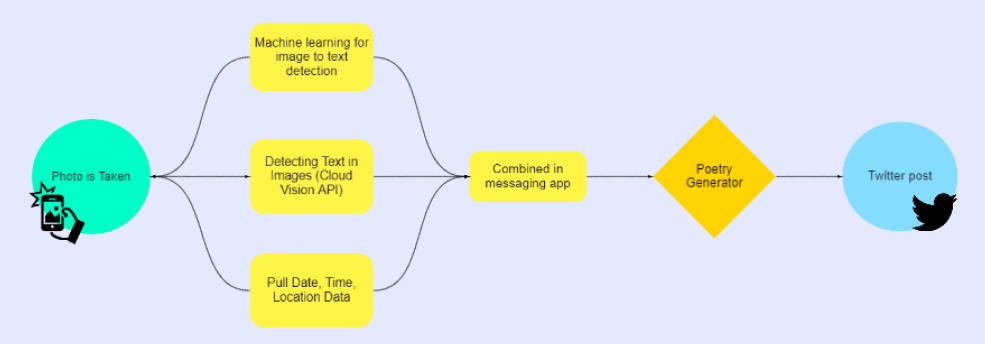
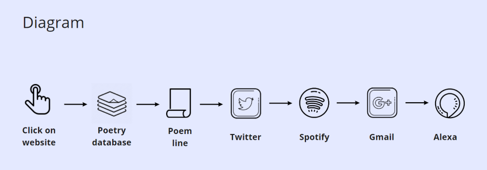

I particularly like that an example here is given as a way to connect graphic design to systems. I think most of time, the connection between graphic design and systems can be unclear, as some people might ask "What does graphic design, or making things look good, have to do with systems?". This quote gives a direct example of how systems are used in such a discipline. However, the part I like the most about this quote is the last sentence. I agree that without having some sort of system, it can be intimidating to start on a design when the canvas is blank. Without a system, I sometimes ask myself: Where do I start? What colour should I choose? It is interesting how even on a blank canvas, having a system, even mentally, will help with starting a design, and sometimes even gives us more freedom to try different things.
I am quite fond of the way Albers allows experimentation for the sake of personal experience, rather than trying to establish a unified theory on color. Building upon what was talked about in the text, on the objectivity vs. subjectivity of the experience of colour, I think that it is important to note that there are psychological aspects to color theory that are "objective" and should be considered, however it is also important to allow the designer or user to experience color and color combinations themselves for a subjective point of view. Albers' way of teaching experiments for students to experience things on their own is important for the combination of an objective understanding of color theory and a subjective experience.
It seems to me that the idea that 'bias will come along for the ride' is an obvious fact and it is common practice for designers, developers and those who work with AI to be aware and prepare to deal with bias, or perhaps even try to prevent algorithmic bias, but I then wonder why bias is so often overlooked? Is there a way in which people who are working with algorithmic bias in AI can be be better prepared with identifying bias? If AI "COPY THE HUMANS", like mentioned in this chapter, then perhaps instead of only being prepared for bias and planning what to do about it, people can undergo some sort of bias identification training themselves first, to identify their own biases and re-educate themselves to remove these personal biases before working with AI, so that they have a better chance of not feeding AI with biased information through the capability of identifying biases more easily.
I'm not sure how I feel about this. On one hand, I feel that perhaps no words should have gender distinctions. Perhaps if there are no words with gender distinctions, then the bias problem with words and their connection to gender might be solved. However, even if there are no words with gender distinctions, there might still be gender bias from text used in the internet. So on the other hand I feel like I recognize the problem is not within words that have gender distinctions, but how people perceive genders in general.
What interests me here is the idea of looking at AI as colleagues (very, very strange ones), not machines or tools. It's interesting to look at AI as not just tools that we use but perhaps beings that need to be taught team values and how-tos, the same way we would a new, slightly lost and very strange colleague. If we treat them as beings (colleagues) and not as tools, then maybe we'll be able to identify the biases that they learn through the data we feed them.
Group Members: Isabelle Chaligne, Tingyi Li, Elaine Purnama
For this three week assignment, we were asked to look at The Web as a Rube Goldberg Machine - a machine / system where the user initiates a single action, which triggers a chain of events.
Our first thought was a poetry generator machine, using this kind of system:

Due to time constraints, we had to modify our plan, and decided to play with what we could do instead. We finally decided on the concept of the telephone game, or Chinese Whispers, where information is transferred (and usually changed) from one person to another.
This is the system we came up with:

Final Video:
Given more time, we would have liked to add more parts to the system. We initially tried to use Musixmatch in the process between Twitter and Spotify, so that the tweet would trigger a song search in Musixmatch, which would save the first song listed in the search, and would then trigger another search in Spotify using the title of the saved song. We were unable to get this to work, so we removed it, but would like to add other applications as part of the system.